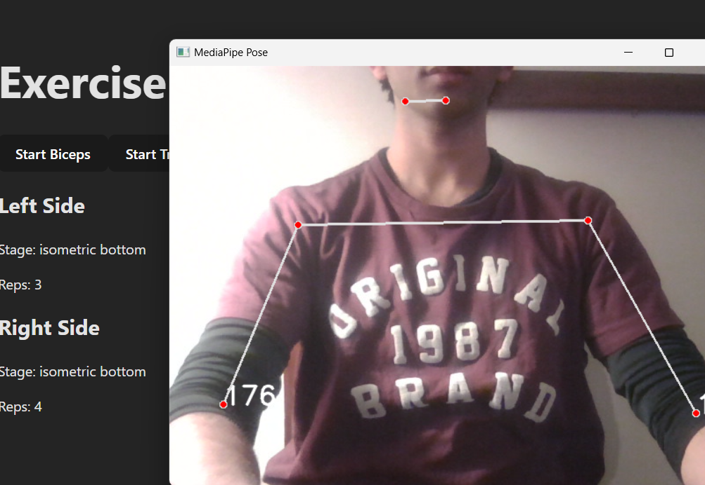

Professional Work
Projects Beyond the Classroom

Work Experience
TapTab
TapTab is a startup building a platform that helps users discover and explore local restaurants. As the frontend lead, I was responsible for designing and building UI interfaces (React Native) that users regularly interact with alongside contributing to the backend architecture (Express + PostgreSQL). This project illustrates my ability to communicate across roles by transforming ideas into designs and designs into code. It also highlights my leadership skills as I constantly had to make decisions in a timely manner, delegate tasks to my team, and be ready to explain the reasoning behind my actions.
View Project ↗
Personal Project
Reptix
Reptix is a platform that utilizes computer vision to automatically count reps for gym exercises in real time. This was a personal project where I built the frontend (React) and the backend (Flask API, MediaPipe, and OpenCV) to identify movement patterns and display live metrics to the user. Building this project by myself required me to constantly get feedback from outside sources and reiterate. I had to constantly try out new designs and strip down unnecessary complexity until only essential information was displayed to the user at the right time.
View Project ↗